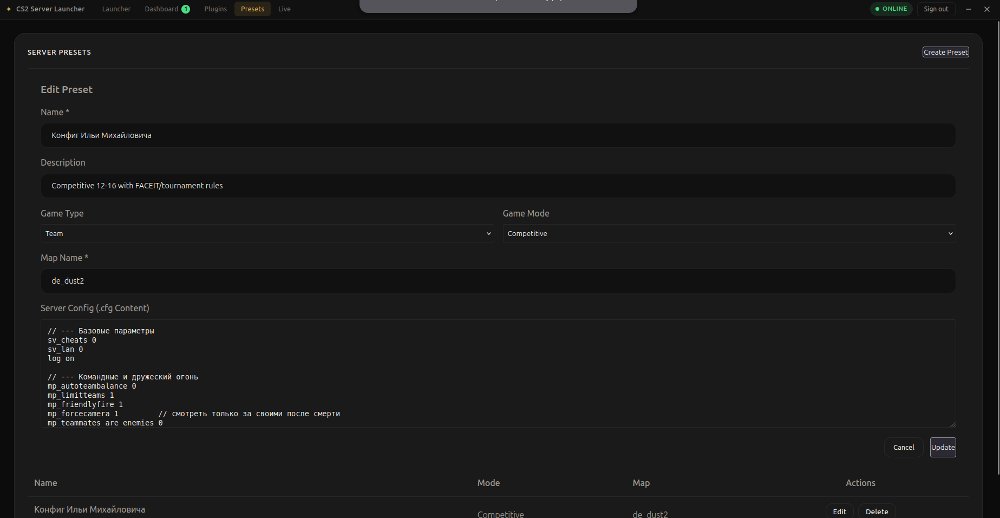
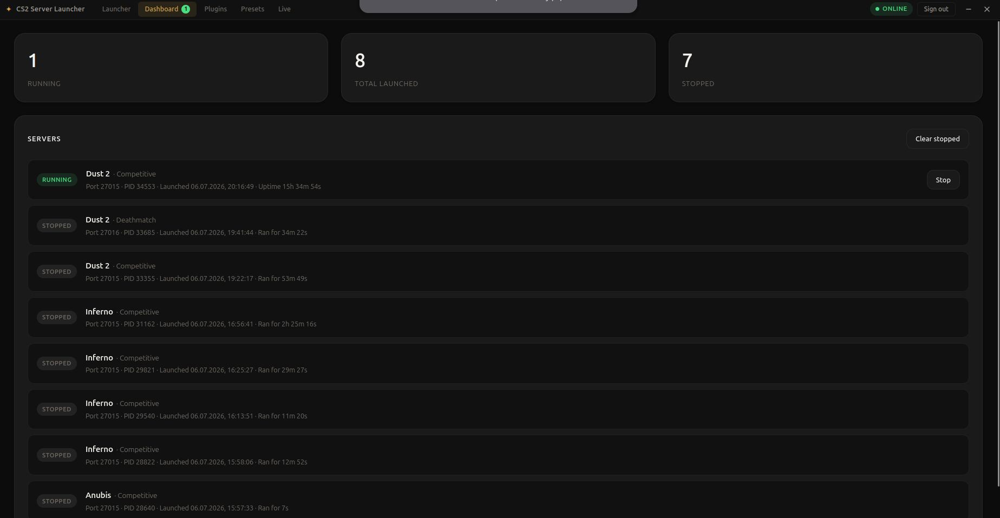
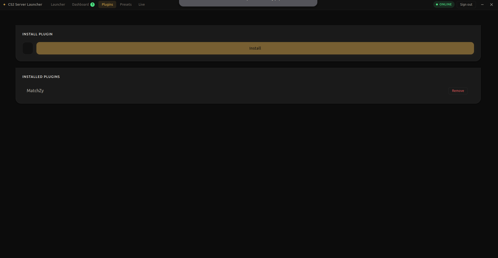

[ Экраны · функционал ]
Ключевые экраны
Плейсхолдеры ниже подхватят реальные скрины автоматически — имя файла указано на каждой рамке.
Экран 02
Настройка сервера: режим игры, карта, executable
assets/cs-manager/02-server-config.png

Экран 03
RCON-панель: список игроков и кик
В разработке
Экран 04
Живая консоль сервера с цветной разметкой
assets/cs-manager/04-console.png

Экран 05
Менеджер плагинов + установка Metamod с прогрессом
assets/cs-manager/05-plugins.png
